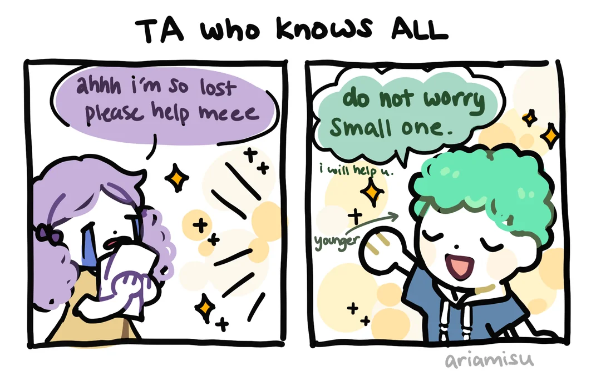

I have TA'd a variety of courses since Spring 2023 at the University of Illinois (UIUC) and the University of Maryland (UMD).
Most courses have had a focus on general biology and writing skills.
List of courses taught over the years:
Most courses have had a focus on general biology and writing skills.
List of courses taught over the years:
- HORT 105: Vegetable Gardening Lab (UIUC)
- PLPA 200: Plants, Pathogens, & People (UIUC)
- CPSC 116: The Global Food Production Web (UIUC)
- BSCI 171: Principles of Molecular & Cellular Biology Lab (UMD)
I aim to create an energetic class environment, keeping students engaged and curious. I want my students to not be afraid of making mistakes and to own up to them so that they can continue improving on their journey to becoming young scientists.
As part of the Grad School Application Workshop held in Spring 2024, I prepared a document that serves as a guide for what to consider when applying to grad schhols.
Access the document here: PDF
Aside from my teaching responsibilities I am also passionate about addressing food insecurity on campus and inform my students of various assistance programs such as: